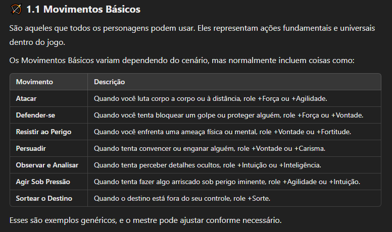
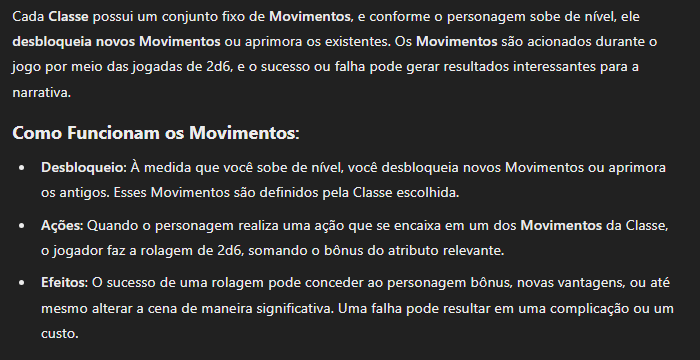
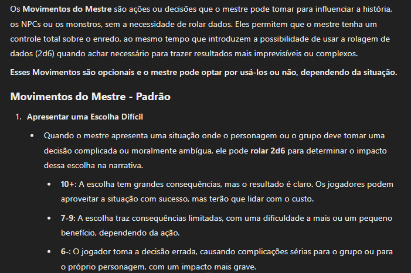
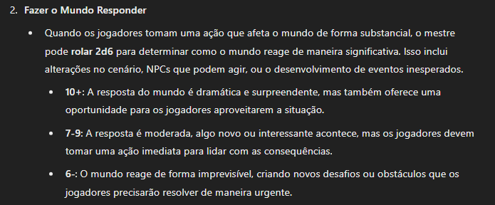
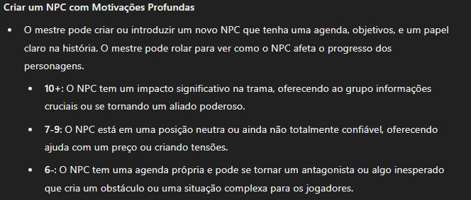

Mecânicas Principais
O sistema do RPG é baseado no 2D6WORLD PbtA (Powered by the Apocalypse) que foca na estrutura narrativa, regras simples e flexíveis, como também no desenvolvimento da história e personagens. É um sistema que apesar de estar consolidado, pode ser customizado totalmente pelo mestre da mesa. Desde os nomes, até o funcionamento do sistema e as rolagens de dados.
🎲 Jogadas de 2d6
O sistema usa dois dados de seis lados (2d6) para resolver ações. O resultado determina o sucesso ou falha das ações
dos personagens.
• 10+ ⟶ Sucesso total. Você consegue o que quer sem complicações.
• 7-9 ⟶ Sucesso parcial. Você consegue o que quer, mas com alguma complicação ou custo. (Nem sempre é exigido)
• 6 ou menos ⟶ Falha. O mestre pode aplicar uma consequência ou complicação.
🧩 Playbooks (Livro do Personagem)
Os personagens são criados com Playbooks (Livros de Personagem), que representam arquétipos em vez de apenas
classes rígidas. Para diversificar os personagens dos jogadores, cada Playbook tem:
• Movimentos Únicos.
• Atributos Personalizados.
• Histórico/Motivações.
• Relacionamentos.
• Níveis.
🏆 Atributos
Os personagens têm atributos que são somados aos 2d6 nas rolagens. No 2d6WORLD, os atributos são adaptáveis ao cenário,
mas geralmente incluem:
• Força ⟶ Poder físico, resistência.
• Agilidade ⟶ Reflexos, furtividade.
• Vontade. ⟶ Determinação, carisma.
• Inteligência. ⟶ Raciocínio, conhecimento.
• Intuição. ⟶ Para percepção sobrenatural ou mágica.
• Sorte. ⟶ Para eventos caóticos e inesperados.
Cada atributo varia entre -1 a +2 no início, influenciando as jogadas de 2d6.
⚡ Movimentos
Os personagens não fazem testes genéricos para qualquer ação. Em vez disso, o sistema usa Movimentos, que são ações
específicas ativadas quando uma situação acontece dentro da narrativa. Eles podem ser:
📜 Movimentos Básicos — comuns a todos os personagens, como atacar, investigar, persuadir, resistir, etc.

🌀 Movimentos de Classe — exclusivos da classe do personagem, como habilidades únicas ou técnicas especiais.

⚔️ Movimentos do Mestre — usados pelo mestre para desafiar os jogadores, criar reviravoltas e trazer consequências.



Embora o mestre tenha controle total sobre a narrativa, ele pode usar esses Movimentos para introduzir imprevisibilidade
ou complicações adicionais. Quando o mestre sente que uma ação pode gerar uma reviravolta interessante ou um risco real,
ele pode optar por rolar 2d6, seguindo o padrão de sucesso, falha ou complicação.